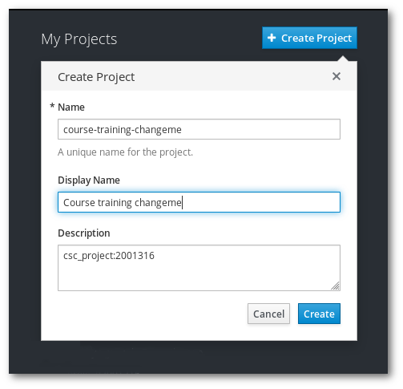

In this exercise we will just log in Rahti and create a project. This project will be used during all the exercises.
Log in Rahti's web console, Rahti.csc.fi using the credentials provided.
Create a rahti project named course-training-<number> using the web interface.

Note: Add "CSC_project: 2001316" as description of your rahti project.